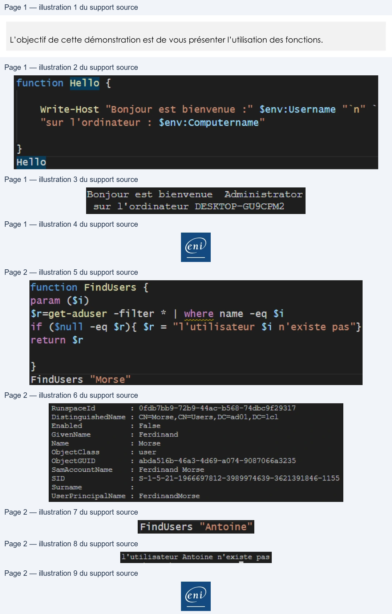

Transcription du document du Drive TSSR. La mise en forme est adaptée au Web ; les compléments IA du portail sont présentés séparément.
Initiation à PowerShell
Démonstration 07 du module 5
L’objectif de cette démonstration est de vous présenter l’utilisation des fonctions.
Pour faciliter la réalisation d’un script, il est nécessaire de mettre en place des fonctions dans
lesquelles des commandes seront enregistrées pour les réutiliser facilement.
Cela permet de ne pas répéter les lignes de commandes à plusieurs reprises dans un script.
• Une fonction se déclare avec la commande Function et le nom attribué à la fonction.
• Le nom d’une fonction ne doit pas contenir de caractère réservé comme le $ ou autre signe de ponctuation.
La fonction Hello affiche les valeurs des variables d’environnement du système.
Pour appeler cette fonction, il suffit de saisir le nom de la fonction sans commande préalable.
Le caractère `n permet le saut de ligne.
Les fonctions sont capables de recevoir des paramètres et de les intégrer sous forme de variables.
La valeur de ses variables sera transmise lors de l’appel de la fonction.
Page 1/2
© ENI – Tous droits réservés
function
Hello
{
Write-Host
‘Bonjour
est bienvenue
:"
$env:Username
“ n°"
~
"sur l'ordinateur
:
$env:Computername"
Hello
Bonjour est bienvenue
Administrator
sur l'ordinateur
DESKTOP-GU9SCPM2
En
Initiation à PowerShell
On déclare la fonction FindUsers avec le paramètre $i qui va contenir l’utilisateur à rechercher. Puis on renvoie le résultat dans la variable $r.
On appelle la fonction avec le paramètre Morse ; la fonction effectue la recherche et renvoie l’utilisateur.
Si aucun utilisateur n’est trouvé, la fonction renvoie un message d’utilisateur non trouvé.
Page 2/2
© ENI – Tous droits réservés
function
Findusers
{
param
($i)
$r=get-aduser
-filter
*
|
where name -eq
$7
if
($null
-eq $r){
$r = “l'utilisateur
$i
n'existe
pas"}
return
$r
FindUsers
“Morse”
Runspaceld
:
OfdbTbb9-72b9-44ac—b568—-74dbc9£29317
DistinguishedName
:
CN—Morse, CN-Users, DC-ad01,DcC—lcl
Enabled
:
False
GivenName
:
Ferdinand
Name
:
Morse
ObjectClass
:
user
SamAccountName
:
Ferdinand Morse
Surname
=
UserPrincipalName
:
FerdinandMorse
FindUsers
“Antoine”
